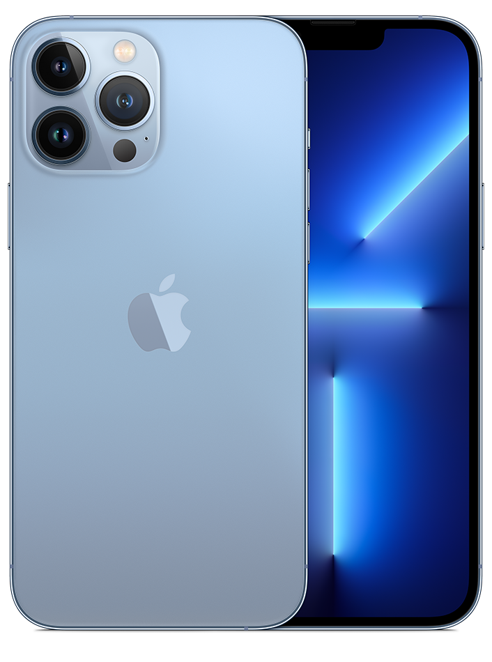
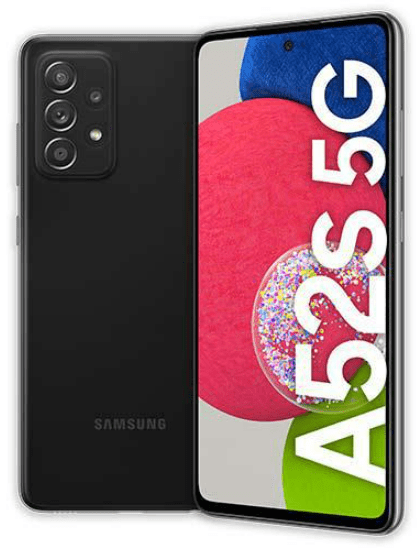

Dvanásta generácia obľúbeného smartfónu vás svojou výbavou určite nesklame. Výkonný procesor
zvládne aj
náročné
operácie v priebehu okamihu a navyše je energeticky nenáročný. Prakticky bezrámčekový displej hrá všetkými
farbami a jednotlivé pixely majú samostatné podsvietenie, takže si všetok obsah vychutnáte v ešte lepšom
podaní.
Zariadenie podporuje mobilné siete 5G, vďaka čomu môžete sťahovať, telefonovať aj sledovať online prenosy v
skvelej kvalite. Dvojitý fotoaparát disponuje množstvom funkcií a efektov, s ktorými každú snímku aj video
dotiahnete k dokonalosti. A navyše je iPhone 12 odolný proti prachu, vode aj nárazu.
Inovatívny dizajn
Hranatý dizajn telefónu Apple sa vracia. Použitý bol mimoriadne odolný letecký hliník a vývojári pripravili
päť
farebných prevedení. Sklenený displej je chránený nanokeramickými kryštálmi, ktoré zaistia, aby ste
obrazovku
nepoškrabali alebo nezničili.
Inovatívny dizajn
Vždy pripravený fotiť
Pre zachytenie tých najzaujímavejších momentov je iPhone 12 vybavený dvojitou 12 Mpx foto sústavou. Ako
širokouhlý, tak aj ultraširokouhlý fotoaparát podporuje Nočný režim, takže s nimi dosiahnete lepšie výsledky
aj
pri zlom svetle. Z ďalších vychytávok nechýba bokeh efekt, optická stabilizácia obrazu, podpora HDR s
detekciou
scény alebo technológia Deep Fusion.
Vždy pripravený fotiť
Ako z Hollywoodu
Vžite sa do úlohy filmového režiséra a natočte video v Dolby Vision s kvalitou 4K HDR. Následne môžete film
upraviť podľa svojich predstáv priamo v telefóne a zdieľať ho cez AirPlay do televízora. Potom už môžete
sledovať obdiv v očiach vašich priateľov nad vynikajúcim obrazom a svetelnosťou, ktorá je o 27 % lepšia.
Ako z Hollywoodu
Skutočné farby
5,4" displej má 476 pixelov na palec. Každý pixel je navyše samostatne podsvietený, takže pri vypnutí svetla
uvidíte skutočne čierno-čiernu. Maximálny jas je 1 200 nitov. Text bude vďaka kvalitnému zobrazeniu lepšie
čitateľný a jednotlivé písmená uvidíte ostrejšie. Prakticky bezrámčekový OLED displej vám skrátka zobrazí
všetko
jasno, živo, čitateľne a v perfektnom farebnom prevedení.
Skutočné farby
Na rýchlosti záleží.
Hlavné charakteristiky
Výrobca - Apple
Konštrukcia - dotykové
Operačný systém - iOS
Verzia operačného systému - iOS 14
Hmotnosť - 133 g
Možnosť pamäťovej karty - ne
Odolné - áno
Produktový rad - Apple iPhone 12 mini
Modelový rok - 2020
Nadstavba systému - bez nadstavby
Cena : 618,90 €
Samsung Galaxy A52 A525F 6GB/128GB
Popis produktu
Elegantný smartfón s veľkým displejom, ktorý chráni oči a zobrazuje všetko plynulo a čitateľne,
nech už sú
okolité podmienky akékoľvek. Štyri objektívy fotoaparátu vytvoria ultraširokouhlé snímky, stabilný a jasný
obraz, rozostrené pozadie aj makro fotografie. Stabilné sú aj videá a selfie portréty vo vysokom rozlíšení.
Telefón je vodoodolný, takže si s ním môžete ísť pokojne zaplávať. Veľkokapacitná batéria vydrží celý víkend
a
rýchlonabíjanie sa postará o dodanie energie bez zbytočného zdržiavania. K lepšiemu zážitku z hrania hier
prispeje Game Booster a dva špičkové reproduktory. Vďaka Samsung Knox a snímaču odtlačkov prstov je Galaxy
A52
zabezpečený na jednotku.
Superschopný displej
6,5" displej Super AMOLED s Full HD+ rozlíšením pracuje absolútne plynulo aj pri akčných scénach filmu alebo
v
priebehu hrania hier. Vďaka vysokému jasu 800 nitov bude obrazovka perfektne čitateľná aj na ostrom slnku.
Nechýba ochrana očí Eye Comfort Shield, ktorá zaisťuje nižšie vyžarovanie modrého svetla.
Superschopný displej
Akú farbu si vyberiete?
Inteligentný telefón s jednoduchým a zároveň mimoriadne elegantným dizajnom prichádza na trh v štyroch
farbách.
Vybrať si môžete svetlo modré, svetlo fialové, klasické čierne alebo čisto biele prevedenie. Zadná strana je
matná, takže farby krásne vyniknú.
Akú farbu si vyberiete?
Fotky ako z ateliéru
Telefón disponuje štyrmi objektívmi, ktoré sú prispôsobené na všetky druhy fotenia. S hlavným 64 Mpx
objektívom
vyfotíte snímky s vysokým rozlíšením, zatiaľ čo hĺbkový snímač umožní pracovať s ostrosťou. Ultraširokouhlý
fotoaparát zaberie všetko, čo vidíte, a s makro objektívom môžete skúmať aj tie najmenšie detaily.
Fotky ako z ateliéru
Stabilné snímky i videá
Optická stabilizácia obrazu zaistí, aby bola každý snímka perfektne ostrá a jasná, a poradí si aj pri horšom
svetle. Superstabilizácia obrazu sa zas postará o stabilné videá v pohybe. Konečne zachytíte súťaženie
svojich
detí či hranie mačiatok v skvelej kvalite.
Stabilné snímky i videá
Skvelé selfie kdekoľvek.
Hlavné charakteristiky
Výrobca - Samsung
Konštrukcia - dotykové
Operačný systém - Android
Verzia operačného systému - Android 11
Hmotnosť - 189 g
Možnosť pamäťovej karty - ano
Odolné - ano
Produktový rad - Samsung Galaxy A52
Modelový rok - 2021
Nadstavba systému - Samsung One UI
Cena : 301,00 €

Apple iPhone 13 128GB
Popis produktu
Z iPhonu 13 s množstvom inovácií budete nadšení. Výrobca do neho zakomponoval to
najlepšie. Luxusný design a odolnosť voči vode i prachu možno vnímať ako samozrejmosť, ale dokonalý
fotoaparát vás naozaj ohúri. Nechýba ani bleskurýchly šesťjadrový čip alebo prvotriedny displej, z ktorého
nedokážete odtrhnúť zrak.
Apple iPhone 13 128GB
Bezchybný vzhľad
Luxusný vzhľad je v prípade iPhonov už tradíciou – a Apple iPhone 13 v tomto smere nijako nezaostáva.
Výrobca sa sústredil na každý detail, takže model vyniká nielen eleganciou, ale aj odolnosťou. Disponuje
mimoriadne pevným sklom Ceramic Shield, ktoré znesie omnoho viac ako konkurenčné smartphony. Ploché hrany
odolnej konštrukcie sú zasa príjemné na dotyk i na pohľad. Nezabudnime ani na odolnosť telefónu voči vode a
prachu (certifikát IP68) a jeho dostupnosť v štýlových farebných odtieňoch. Apple iPhone 13 skrátka presne
zodpovedá vášmu štýlu.
Bezchybný vzhľad
Autentický obraz
Na displeji Super Retina XDR si vychutnáte jasný, pestrý a ostrý obraz. Biela skutočne žiari a čierna
získava potrebnú hĺbku. Vďaka vysokej hustote pixelov sa môžete tešiť na dokonale ostrý obraz a nanajvýš
realistické spektrum farieb. Nič bližšie realite skrátka nenájdete.
Autentický obraz
Bleskurýchly čip
Model ukrýva neuveriteľne rýchly čip A15 Bionic, vďaka ktorému sa obyčajný smartphone mení na bleskovú
strelu. Okrem vyššej rýchlosti a úspory elektrickej energie vám dopraje aj prvotriedny fotoaparát a ochráni
vaše súkromie. Čip A15 Bionic skrátka mení pravidlá hry vo váš prospech.
Bleskurýchly čip
Staňte sa fotografom
Zásluhou uhlopriečkového usporiadania vznikol na telefóne dostatok miesta pre vskutku mimoriadny širokouhlý
fotoaparát s veľkým a rýchlejším snímačom. Zachytí o 47 percent viac svetla, takže aj na tmavých záberoch
rozoznáte každý detail. Výrobca ďalej inovoval optický stabilizátor obrazu s posuvom snímača. Aj keď sa pri
fotografovaní náhodou pohnete, budete sa môcť pochváliť ostrým výsledkom.
Hlavné charakteristiky
Výrobca - Apple
Konštrukcia - dotykové
Operačný systém - iOS
Verzia operačného systému - iOS 15
Hmotnosť - 174 g
Možnosť pamäťovej karty - ne
Odolné - ano
Produktový rad - Apple iPhone 13
Modelový rok - 2021
Nadstavba systému - bez nadstavby
Cena : 799,00 €
Samsung Galaxy S21 5G G991B 8GB/128GB
Popis produktu
Vodoodolný telefón od Samsungu je prepracovaný zo všetkých strán. Má veľký displej s plynulým
obrazom a
ochranou
pre oči a navyše je obrazovka chránená odolným sklom Corning Gorilla. Nakrúca 8K stabilné a superplynulé
videá,
z ktorých potom vytvorí aj fotografie. Dokáže fotiť aj v tme tak, aby boli výsledné snímky perfektne
viditeľné.
Batéria sa nabije v priebehu chvíľky a o energiu sa dokáže podeliť aj s inými zariadeniami. Okrem toho je
smartfón zabezpečený ochranou Knox, vie pracovať s 5G a pripojí sa k televízoru aj počítaču.
Plynulý obraz
AMOLED displej s veľkosťou 6,2" je šetrný k očiam vďaka technológii Eye Comfort Shield, takže aj
niekoľkohodinové používanie smartfónu bude pre oči príjemné. A so 120 Hz obnovovacou frekvenciou bude obraz
absolútne plynulý aj pri sledovaní akčných filmov alebo hraní hier.
Plynulý obraz
Štyri farby, jedna kvalita
V Samsungu pripravili Galaxy S21 5G v niekoľkých farbách. Vybrať si môžete fialový, šedý, biely alebo ružový
variant. Všetky sú z prednej strany chránené sklom Corning Gorilla Glass Victus, ktoré je odolné proti
poškodeniu i poškriabaniu.
Štyri farby, jedna kvalita
8K videá
Videá môžete nahrávať v rozlíšení až 8K a s rýchlosťou 24 snímok za sekundu. S telefónom vytvoríte
mimoriadne
kvalitné videá, ktoré môžete potom zdieľať so svojimi priateľmi alebo nahrať na YouTube. Funkcia 8K Video
Snap
umožňuje z nakrúteného videa získať fotografie s rozlíšením 33 Mpx. Superstabilizácia vám pomôže pri
športových
akciách alebo dobrodružných cestách.
8K videá
Single Take
Telefón od Samsungu dokáže nakrúcať superplynulé videá s rýchlosťou 60 snímok za sekundu a prispôsobiteľnou
obnovovacou frekvenciou. Ďalšou vychytávkou je Single Take, ktorá z jedného videa vytvorí mnoho rôzne
upravených
fotografií a zostrihaných videí. Takto jednoducho získate veľa materiálu do svojho albumu, ktorý môžete
zdieľať
na sociálnych sieťach.
Single Take
Fotoaparáty stoja za to
Predný 10 Mpx selfie fotoaparát je zabudovaný priamo v displeji. Zadný fotoaparát disponuje tromi objektívmi
Hlavné charakteristiky
Výrobca - Samsung
Konštrukcia - dotykové
Operačný systém - Android
Verzia operačného systému - Android 11
Možnosť pamäťovej karty - ne
Odolné - ano
Produktový rad - Samsung Galaxy S21
Modelový rok - 2021
Nadstavba systému - Samsung One UI
Cena : 629,00 €

Samsung Galaxy A52s 5G 6GB/128GB
Popis produktu
Samsung Galaxy A52s 5G 128 GB, zelená
Spoločnosť Samsung patrí na poli inteligentných mobilných telefónov medzi svetové špičky a svoje postavenie
dokazuje aj v prípade Galaxy A52s 5G. Telefónu na prednej strane dominuje veľký 6,5" Super AMOLED displej s
extra tenkými rámikmi, ktoré dávajú zariadeniu luxusný vzhľad, ktorý dopĺňa aj vstavaná kruhová selfie
kamera v
prednej časti obrazovky.
Perfektný obraz
Rozlíšenie displeja 2400 × 1080 px dopĺňa vysoká obnovovacia frekvencia 120 Hz, ktorú využijete hlavne pri
hraní
akčných FPS hier. Vysokú obnovovaciu frekvenciu uvítate aj v prepracovanom používateľskom rozhraní One UI 3
a
pri používaní jednotlivých aplikácií. Na zabezpečenie vašich osobných informácií môžete využiť pokročilé
zabezpečenie Samsung Knox alebo čítačku odtlačku prstov integrovanú priamo v displeji.
Kľúčové vlastnosti: 6,5" Super AMOLED displej s Full HD+ rozlíšením a 120 Hz obnovovacou frekvenciou
8-jadrový
procesor Snapdragon 778G s frekvenciou až 2,4 GHz 6 GB RAM + 128 GB úložisko s možnosťou rozšírenia o
microSD
karty (až 1 TB)
Štvorica zadných fotoaparátov (64 + 12 + 5 + 5 Mpx) a predná selfie kamera (32 Mpx)
Batéria s kapacitou 4 500 mAh a podporou 25 W rýchlonabíjania
Zvýšená odolnosť IP67 a ochranné sklo displeja Gorilla Glass 5
Čítačka odtlačku prstov v displeji a stereo reproduktory
Smartfón pripravený na budúcnosť.
Pripravený na siete novej generácie
Budúcnosť 5G sietí je za dverami ‒ pripravte sa na ňu s Galaxy A52s 5G od spoločnosti Samsung a objavte nové
zajtrajšky. Streamujte, sťahujte a zdieľajte obsah strhujúcou rýchlosťou 5G.
Plynulý displej pre zábavu bez kompromisov
Bezpečný a spoľahlivý
V tele smartphonu sa ukrýva osemjadrový procesor, ktorý v kombinácii s veľkorysou pamäťou vždy poskytne adekvátny výkon. Ak by vnútorná pamäť predsa len nepostačovala, pomocou micro SD karty ju hravo rozšírite. Samsung Knox automaticky chráni hardware aj software prístroja už od jeho prvého zapnutia. Vďaka tejto technológii sa k vašim citlivým dátam nedostane nikto nepovolaný.